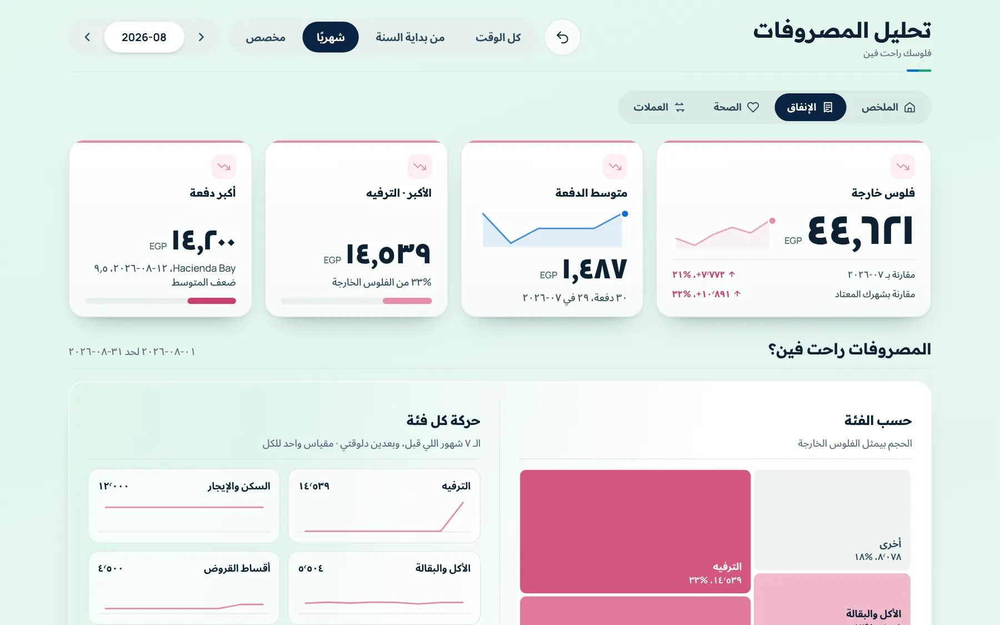
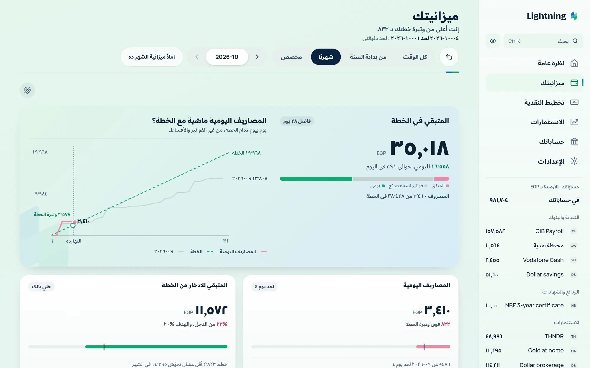

Lightning
Lightningالادخار والتخطيط
خطة مالية شخصية في مصر: ٥ خطوات تبدأ بيها من مرتبك
الخطة المالية مش توقّع ولا قايمة منتجات. هي خمس خطوات بالترتيب اللي بتقابلها بيه في لايتنينج، وكل واحدة بتستخدم اللي طلع من اللي قبلها.
الخطة المالية مابتبدأش بسؤال: أحط فلوسي فين؟ ولا بصافي الثروة. بتبدأ بإنك تسجّل اللي بتصرفه. وده نفس الترتيب اللي بتقابله في لايتنينج أول ما تفتحه، وكل خطوة بتستخدم اللي طلع من اللي قبلها.
١. سجّل مصاريفك
ابدأ بإنك تضيف الأماكن اللي فيها فلوسك: البنك، والكاش، والشهادات، وTHNDR، والدهب في البيت. بعدين دخّل تاريخك: كشف حسابك CSV من البنك أو المحفظة، أو ضيف الصفوف بإيدك. لايتنينج بيعرض كل صف قبل ما يتسجّل، وانت اللي بتختار الفئة. ورسايل البنك على الموبايل بتدخل نفس المراجعة. ماتحاولش تبقى مثالي: شهر واحد حقيقي أحسن من سنة فيها فجوات.

وفي إزاي تدخّل كشف البنك وإزاي تتابع مصاريفك من غير ما تكتب كل حاجة تفاصيل أكتر.
٢. شوف فلوسك راحت فين
افتح «الإنفاق». هتشوف خرج كام، وإيه أكبر فئة، وكل فئة اتحرّكت إزاي. في أغسطس المستخدم التجريبي خرج ٤٤٬٦٢١ جنيه، ٧٬٧٧٢ أكتر من يوليو، وأكبر فئة الترفيه بـ ١٤٬٥٣٩ جنيه، يعني ٣٣٪ من الشهر. و«مقارنة الفترات» بتفرّق لك بين شهر عادي وشهر استثنائي.

وبعدين دوّر على المصاريف اللي بتيجي مرة أو اتنين في السنة: المصاريف المدرسية، ورمضان والعيد، والصيف، ورخصة العربية، وقسط التأمين السنوي. هي اللي بتخلي الشهر العادي باين سهل، والشهر التقيل مفاجأة. هتحسب حسابها في الخطوتين ٣ و٤.
٣. خطط لنقديتك
دلوقتي لايتنينج لازم يعرف إيه اللي داخل وإيه المستحق. ضيف مرتبك وفواتيرك في «المتكرر»، وأقساطك في «القروض»، وحط مبلغ لصندوق الطوارئ في «المبالغ المحجوزة». وبعدها «تخطيط النقدية» بيطلّع لك النقدية المتاحة، يعني نقديتك بعد المحجوز والمستحق، وكام تصرف بأمان لحد المرتب الجاي.

والجمعية بتظهر هنا كمان: أقساطها اللي بتدفعها قبل الدخل الجاي بتتخصم قبل الإجابة. أقدر أصرف كام بأمان لحد القبض؟ بيشرح كل سطر، ودليل صندوق الطوارئ بيوريك الاحتياطي لازم يبقى قد إيه.
٤. حط ميزانية من مصاريفك الحقيقية
الميزانية اللي بتتبني من مصاريفك انت خطة تقدر تلتزم بيها. حط الثابت الأول: الإيجار والأقساط والفواتير، والمصاريف السنوية من الخطوة ٢ مقسومة على ١٢. مصاريف مدرسية ١٨٬٠٠٠ جنيه في السنة يعني ١٬٥٠٠ جنيه في الشهر، حتى في الشهور اللي مابتدفعش فيها حاجة. بعدين حط سقف لكل فئة متغيرة. اللي يفضل ده بتاعك: تصرفه أو تدّخره. ولو طلع أقل من توقعك، يبقى الخطة بتقولك حاجة صحيحة.

وفي إزاي تعمل ميزانية شهرية وإزاي تقسّم مرتب ٢٠٬٠٠٠ جنيه تفاصيل أكتر.
٥. شوف مركزك: صافي ثروتك
بص على صافي ثروتك في الآخر، مش في الأول. هو اللي تملكه ناقص اللي عليك، ومابيبقاش له معنى غير لما الأرقام التانية تبقى حقيقية. «النظرة العامة» بتعرضه وإيه اللي مكوّنه. في مثال المستخدم التجريبي من أول السنة هو ٩١٠٬٣٠٤ جنيه، زاد ٣١١٬٨٠٤ جنيه السنة دي: ٩٨٨٬٨٠٤ جنيه ملكه (نقدية ٢٣٦٬٣١٧ واستثمارات ٧٥٢٬٤٨٦) ناقص ٧٨٬٥٠٠ جنيه عليه.

واعرف إزاي الدهب والشهادات والأسهم بتتحسب في صافي ثروتك.
وبعدين كرّر ده مرة في الشهر
مرة في الشهر، اقعد حوالي نص ساعة: دخّل كشوف الشهر (١٠ دقايق)، وخلّص الصفوف القليلة اللي محتاجة قرار (٥ دقايق)، وبعدين اقعد مع أرقامك (١٥ دقيقة). وده الروتين اللي في بيشتغل إزاي. خطة بتتحرك شوية كل شهر أحسن من خطة مثالية بتسيبها بعد شهرين.
الخلاصة
سجّل اللي بتصرفه، وشوف راح فين، وخطط لنقديتك، وحط ميزانية، وبعدين بص على صافي ثروتك وكرّر كل شهر. الخطة مش توقّع. هي طريقة تاخد بيها القرار الجاي والأرقام قدامك.
أسئلة شائعة
ليه أبدأ بالمصاريف مش بصافي الثروة؟
لأن صافي ثروة مبني على تخمين مابيقولكش حاجة. لما شهر من مصاريفك الحقيقية يدخل، كل رقم تاني بيبقى تحته حاجة صحيحة. وتقدر تضيف حساباتك الأول، والنظرة العامة بتتملي وانت ماشي.
أحتاج تاريخ كام شهر؟
شهر كامل كفاية للبداية، وتلاتة أحسن لأنهم بيوروك إيه المصاريف اللي بتتكرر. ابدأ بالكشوف اللي معاك.
أخلّص الأقساط الأول ولا أبدأ أدّخر؟
حط كل قسط في تخطيط النقدية الأول، بالمتبقي وتاريخ آخره. وسيب احتياطي صغير عشان أي مفاجأة ماتضيفش دين جديد، وبعدين قرر والأرقام قدامك. الترتيب الصح بيتوقف على شروط كل قسط، واللي شايفها انت بس.
الجمعية بتتحط فين في الخطة؟
في تخطيط النقدية. هي قسط بتدفعه كل شهر، ومبلغ بتقبضه في شهر معروف. اكتب الاتنين، وحدد الشهر اللي هتقبض فيه قبل ما تعتمد عليها في أي حاجة.